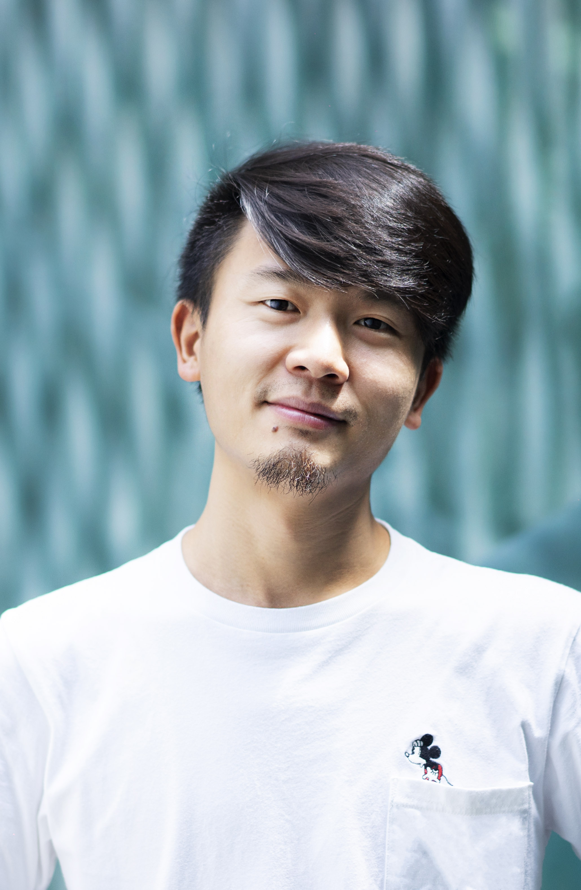

Biography [中文版]

Aven Le ZHOU, FRSA, aCSDF.
Professor, Artist and Programmer.
Fellow, Royal Society of Arts.
Affiliated Fellow, Chartered Society of Designers.
Dr. Aven-Le Zhou is an artist-scholar whose practice-based research examines the sociocultural and ecological dimensions of technological advancements, exploring alternative pathways for technodiversity through interactive art.
His recent doctoral research, From Interactivity to Relationality, critiques the narrowing of "interaction" and "embodiment" within the art-technology nexus. By recentering intercorporeality and introducing post-anthropocentric perspectives on the body, he proposes Relational Embodiment as a framework that extends embodiment beyond anthropocentric perspective toward the technological, the nonhuman, the ecological, and the planetary. This theoretical work foregrounds an urgent call for relational thinking across interactive art and related applied sciences, e.g., AI, robotics, and human-computer interaction.
His artworks have been exhibited internationally at leading institutions and festivals, including Ars Electronica Festival[2024],[2023], ISEA Creative Works, Digital Art China Exhibition, Chronus Art Center, Guangdong Times Museum, and Shanghai Duolun Museum of Modern Art. His scholarly publications appear in renowned art and technology venues such as Leonardo, SIGGRAPH, and ISEA.
Experiences Linkedin
Assistant Professor, XJTLU. 2020 - .
Director of Interactive Experiences Lab, XJTLU. 2020 - .
Artist & Owner. artMachines Studio, Shanghai. 2019 - .
Instructor, NYU Shanghai. 2019 - 2020.
Research Fellow, NYU Shanghai. 2014 - 2019.
Artist Works with Emerging Media. 2014 - 2019.
Education
Ph.D. Computational Media and Art, Hong Kong University of Science and Technology.
M.S. Multimedia Telecommunication, University of Liverpool.
B.Arch. Architecture, Huazhong University of Science and Technology.